I'm still writing this. I hope it will be done by 2022.
I've put off diving into transformers for a few years now, but a few weeks ago someone asked me about them, and the discomfort of not knowing the magic that powers them grew too great for me. This post is a side effect of that dive. Reducing transformers to some prose and diagrams is how I bound them to the scaffolding of my comprehension and memory.
Transformers were introduced in this 2017 paper as a tool for sequence transduction—converting one sequence of symbols into another. The most popular examples of this are translating from one written language to another. It has also been modified to perform sequence completion—given a starting prompt, carry on in the same vein and style. They have quickly become an indispensible tool for research and product development in natural language processing.
Before we start, just a heads-up. We're going to be talking a lot about matrix multiplications and touching on backpropagation (the algorithm for training the model), but you don't need to know any of it beforehand. We'll add the concepts we need one at a time, with explanation.
This isn't a short journey, but I hope you'll be glad you came.
One-hot encoding
Imagine that our goal is to create the computer that responds to our voice commands. It’s our job to build the transformer that converts (or transduces) a sequence of sounds to a sequence of words.
The first step in working with sequences is to convert them to numbers so we can do math on them. We start by choosing our vocabulary, the collection symbols that we are going to be working with in each sequence. In our case, there will be two different sets of symbols, one for the input sequence to represent vocal sounds and one for the output sequence to represent words.
For now, let's assume we're working with English. There are tens of thousands of words in the English language, and perhaps another few thousand to cover computer-specific terminology. That would give us a vocabulary size that is the better part of a hundred thousand. One way to convert a words to numbers is to assign each word its own number. Then a sequence of words can be represented as a list of numbers.
For example, consider a tiny language with a vocabulary size of three: files, find, and my. Each word could be swapped out for a number, perhaps files = 1, find = 2, and my = 3. Then the sentence "Find my files", consisting of the word sequence [ find, my, files ] could be represented instead as the sequence of numbers [2, 3, 1].
This is a perfectly valid way to convert symbols to numbers, but it turns out that there's another format that's even easier for computers to work with, one-hot encoding. In one-hot encoding a symbol is represented by an array of mostly zeros, the same length of the vocabulary, with only a single element having a value of one. Each element in the array corresponds to a separate symbol.
Another way to think about one-hot encoding is that each word still gets assigned its own number, but now it is an index to an array. Here is our example above, in one-hot notation.
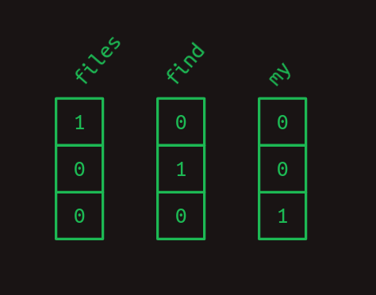
So the sentence "Find my files" becomes a sequence of one-dimensional arrays, which quickly starts to look like a two-dimensional array.
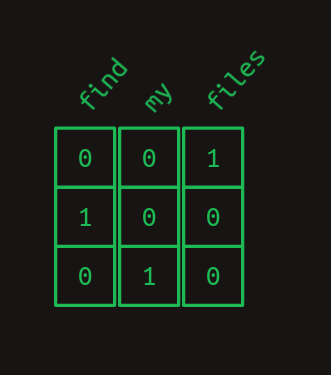
Heads-up, I'll be using the terms "one-dimensional array" and "vector" interchangeably. Likewise with "two-dimensional array" and "matrix".
Dot product
One really useful thing about the one-hot representation is that it lets us compute dot products. These are also known by other intimidating names like inner product and scalar product. To get the dot product of two vectors, multiply their corresponding elements, then add the results.
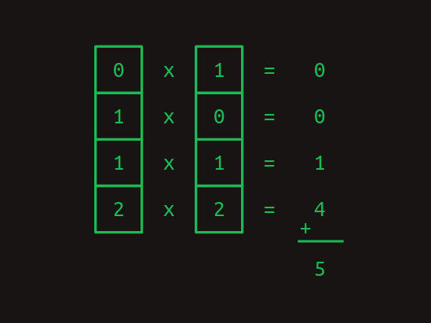
Dot products are especially useful when we're working with our one-hot word representations. The dot product of any one-hot vector with itself is one.
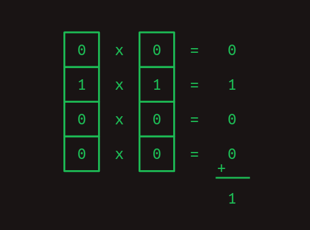
And the dot product of any one-hot vector with any other one-hot vector is zero.
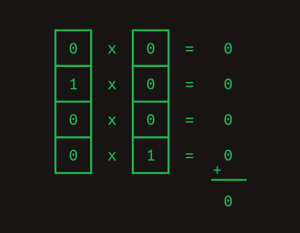
The previous two examples show how dot products can be used to measure similarity. As another example, consider a vector of values that represents a combination of words with varying weights. A one-hot encoded word can be compared against it with the dot product to show how strongly that word is represented.
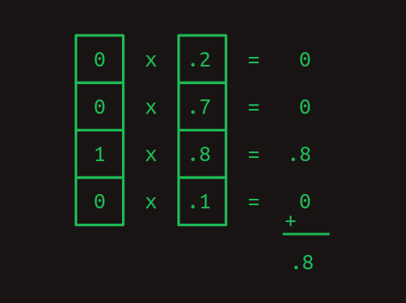
Matrix multiplication
The dot product is the building block of matrix multiplication, a very particular way to combine a pair of two-dimensional arrays. We'll call the first of these matrices A and the second one B. In the simplest case, when A has only one row and B has only one column, the result of matrix multiplication is the dot product of the two.
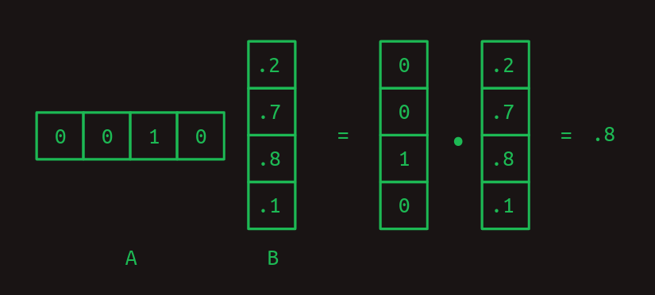
Notice how the number of columns in A and the number of rows in B needs to be the same for the two arrays to match up and for the dot product to work out.
When A and B start to grow, matrix multiplication starts to get trippy. To handle more than one row in A, take the dot product of B with each row separately. The answer will have as many rows as A does.
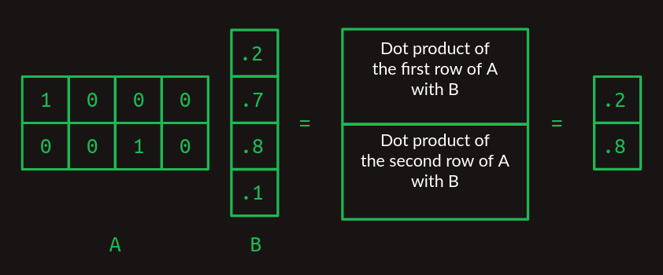
When B takes on more columns, take the dot product of each column with A and stack the results in successive columns.
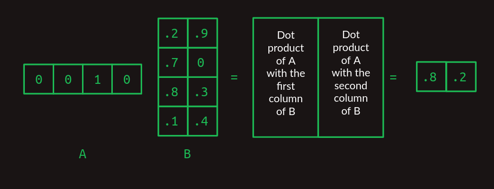
Now we can extend this to mutliplying any two matrices, as long as the number of columns in A is the same as the number of rows in B. The result will have the same number of rows as A and the same number of columns as B.
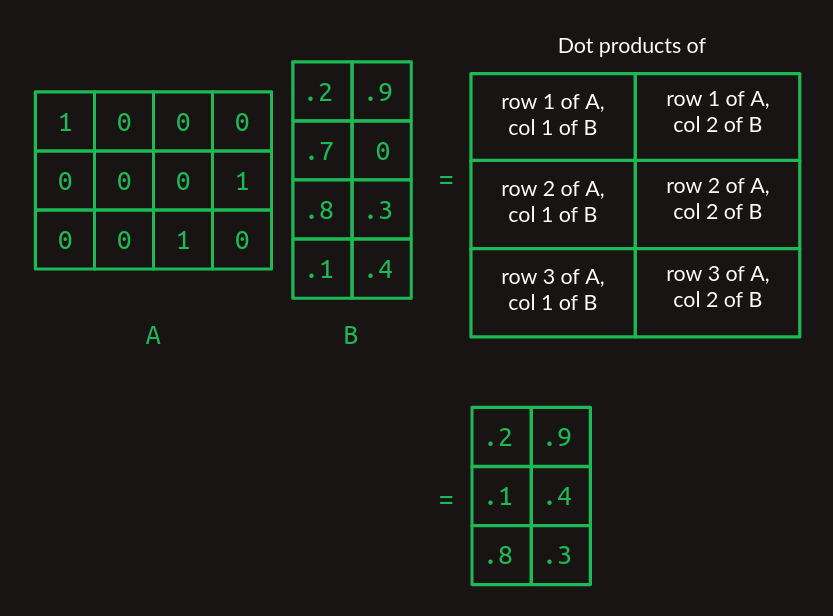
If this is the first time you're seeing this, it might feel needlessly complex, but I promise it pays off later.
Matrix multiplication as a table lookup
Notice how matrix multiplication acts as a lookup table here. Our A matrix is made up of a stack of one-hot vectors. They have ones in the first column, the fourth column, and the third column, respectively. When we work through the matrix multiplication, this serves to pull out the first row, the fourth row, and the third row of the B matrix, in that order. This trick of using a one-hot vector to pull out a particular row of a matrix is at the core of how transformers work.
First order sequence model
We can set aside matrices for a minute and get back to what we really care about, sequences of words. Imagine that as we start to develop our natural language computer interface we want to handle just three possible commands:
- Show me my directories please.
- Show me my files please.
- Show me my photos please.
{directories, files, me, my, photos, please, show}.
One useful way to represent sequences is with a transition model. For every word in the vocabulary, it shows what the next word is likely to be. If users ask about photos half the time, files 30% of the time, and directories the rest of the time, the transition model will look like this. The sum of the transitions away from any word will always add up to one.
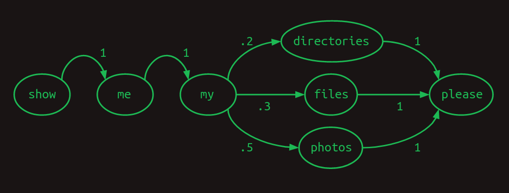
This particular transition model is called a Markov chain, because it satisfies the Markov property that the probabilities for the next word depend only on recent word. More specifically, it is a first order Markov model because it only looks at the single most recent word. If it considered the two most recent words it would be a second order Markov model.
Our break from matrices is over. It turns out that Markov chains can be expressed conveniently in matrix form. Using the same indexing scheme that we used when creating one-hot vectors, each row represents one of the words in our vocabulary. So does each column. The matrix transition model treats a matrix as a lookup table. Find the row that corresponds to the word you’re interested in. The value in each column shows the probability of that word coming next. Because the value of each element in the matrix represents a probability, they will all fall between zero and one. Because probabilities always sum to one, the values in each row will always add up to one.
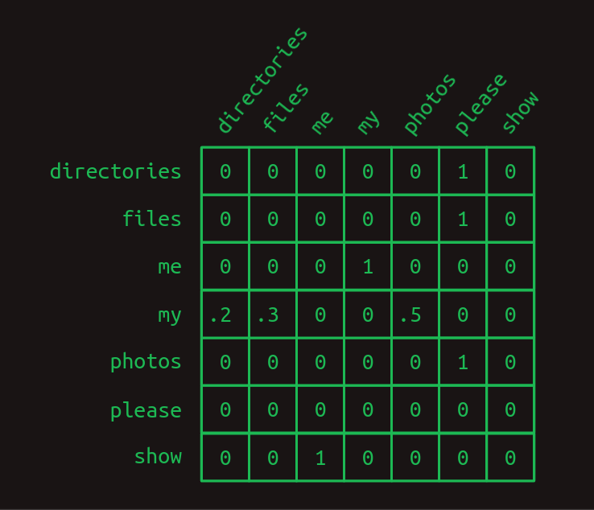
In the transition matrix here we can see the structure of our three sentences clearly. Almost all of the transition probabilities are zero or one. There is only one place in the Markov chain where branching happens. After my, the words directories, files, or photos might appear, each with a different probability. Other than that, there’s no uncertainty about which word will come next. That certainty is reflected by having mostly ones and zeros in the transition matrix.
We can revisit our trick of using matrix matrix multiplication with a one-hot vector to pull out the transition probabilities associated with any given word. For instance, if we just wanted to isolate the probabilities of which word comes after my, we can create a one-hot vector representing the word my and multiply it by our transition matrix. This pulls out the row the relevant row and shows us the probability distribution of what the next word will be.
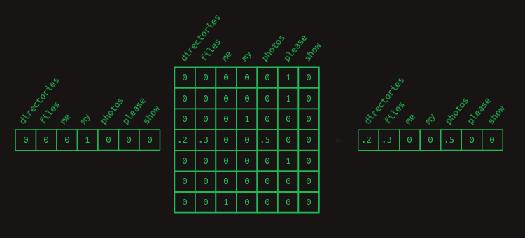
Second order sequence model
Predicting the next word based on only the current word is hard. That's like predicting the rest of a tune after being given just the first note. Our chances are a lot better if we can at least get two notes to go on.
We can see how this works in another toy language model for our computer commands. We expect that this one will only ever see two sentences, in a 40/60 proportion.
- Check whether the battery ran down please.
- Check whether the program ran please.
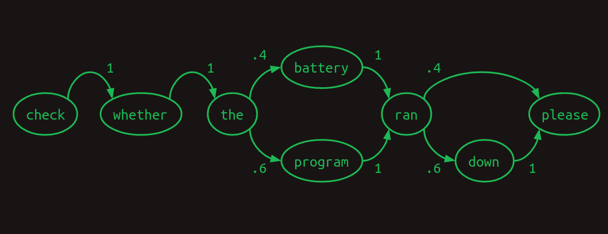
Here we can see that if our model looked at the two most recent words, instead of just one, that it could do a better job. When it encounters battery ran, it knows that the next word will be down, and when it sees program ran the next word will be please. This eliminates one of the branches in the model, reducing uncertainty and increasing confidence. Looking back two words turns this into a second order Markov model. It gives more context on which to base next word predictions. Second order Markov chains are more challenging to draw, but here are the connections that demonstrate their value.
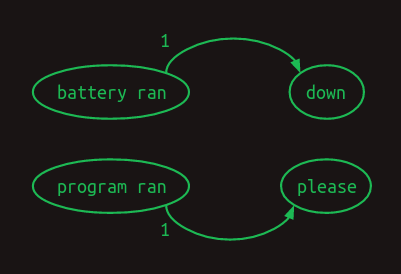
To highlight the difference between the two, here is the first order transition matrix,
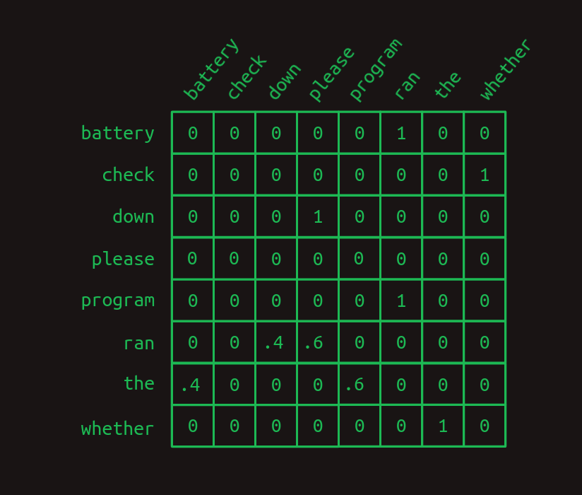
and here is the second order transition matrix.
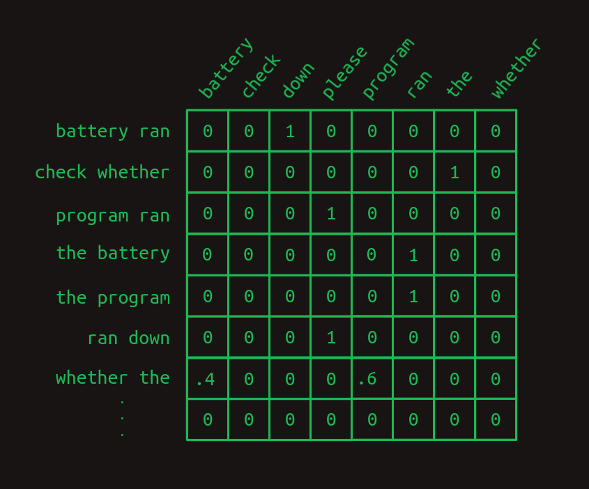
Notice how the second order matrix has a separate row for every combination of words (most of which are not shown here). That means that if we start with a vocabulary size of N then the transition matrix has N^2 rows.
What this buys us is more confidence. There are more ones and fewer fractions in the second order model. There's only one row with fractions in it, one branch in our model. Intuitively, looking at two words instead of just one gives more context, more information on which to base a next word guess.
Second order sequence model with skips
A second order model works well when we only have to look back two words to decide what word comes next. What about when we have to look back further? Imagine we are building yet another language model. This one only has to represent two sentences, each equally likely to occur.
- Check the program log and find out whether it ran please.
- Check the battery log and find out whether it ran down please.
In this example, in order to determine which word should come after ran, we would have to look back 8 words into the past. If we want to improve on our second order language model, we can of course consider third- and higher order models. However, with a significant vocabulary size this takes a combination of creativity and brute force to execute. A naive implementation of an eighth order model would have N^8 rows, a ridiculous number for any reasonable vocubulary.
Instead, we can do something sly and make a second order model, but consider the combinations of the most recent word with each of the words that came before. It's still second order, because we're only considering two words at a time, but it allows us to reach back further and capture long range dependencies. The difference between this second-order-with-skips and a full umpteenth-order model is that we discard most of the word order information and combinations of preceeeding words. What remains is still pretty powerful.
Markov chains fail us entirely now, but we can still represent the link between each pair of preceding words and the words that follow. Here we've dispensed with numerical weights, and instead are showing only the arrows associated with non-zero weights. Larger weights are shown with heavier lines.
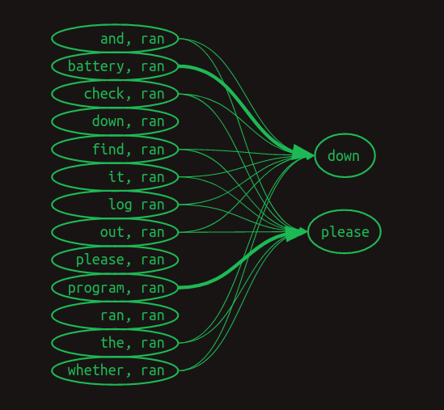
Here's what it might look like in a transition matrix.
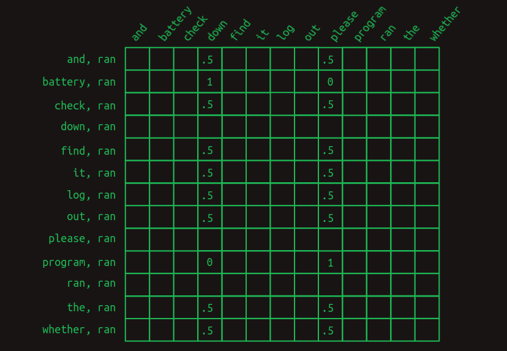
This view only shows the rows relevant to predicting the word that comes after ran. It shows instances where the most recent word (ran) is preceded by each of the other words in the vocabulary. Only the relevant values are shown. All the empty cells are zeros.
The first thing that becomes apparent is that, when trying to predict the word that comes after ran, we no longer look at just one line, but rather a whole set of them. We've moved out of the Markov realm now. Each row no longer represents the state of the sequence at a particular point. Instead, each row represents one of many features that may describe the sequence at a particular point. The combination of the most recent word with each of the words that came before makes for a collection of applicable rows, maybe a large collection. Because of this change in meaning, each value in the matrix no longer represents a probability, but rather a vote. Votes will be summed and compared to determine next word predictions.
The next thing that becomes apparent is that most of the features don't matter. Most of the words appear in both sentences, and so the fact that they have been seen is of no help in predicting what comes next. They all have a value of .5. The only two exceptions are battery and program. They have some 1 and 0 weights associated with the. The feature battery, ran indicates that ran was the most recent word and that battery occurred somewhere earlier in the sentence. This feature has a weight of 1 associated with down and a weight of 0 associated with please. Similarly, the feature program, ran has the opposite set of weights. This structure shows that it is the presence of these two words earlier in the sentence that is decisive in predicting which word comes next.
To convert this set of word-pair features into a next word estimate, the values of all the relevant rows need to be summed. Adding down the column, the sequence Check the program log and find out whether it ran generates sums of 0 for all the words, except a 4 for down and a 5 for please. The sequence Check the battery log and find out whether it ran does the same, except with a 5 for down and a 4 for please. By choosing the word with the highest vote total as the next word prediction, this model gets us the right answer, despite having an eight word deep dependency.
Masking
On more careful consideration, this is unsatisfying. The difference between a vote total of 4 and 5 is relatively small. It suggests that the model isn't as confident as it could be. And in a larger, more organic language model it's easy to imagine that such a slight difference could be lost in the statistical noise.
We can sharpen the prediction by weeding out all the uninformative feature votes. With the exception of battery, ran and program, ran. It's helpful to remember at this point that we pull the relevant rows out of the transition matrix by multiplying it with a vector showing which features are currently active. For this example so far, we've been using the implied feature vector shown here.
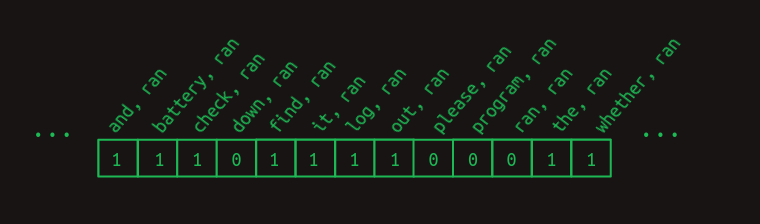
It includes a one for each feature that is a combination of ran with each of the words that come before it. Any words that come after it don't get included in the feature set. (In the next word prediction problem these haven't been seen yet, and so it's not fair to use them predict what comes next.) And this doesn't include all the other possible word combinations. We can safely ignore these for this example because they will all be zero.
To improve our results, we can additionally force the unhelpful features to zero by creating a mask. It's a vector full of ones except for the positions you'd like to hide or mask, and those are set to zero. In our case we'd like to mask everything except for battery, ran and program, ran, the only two features that have been of any help.
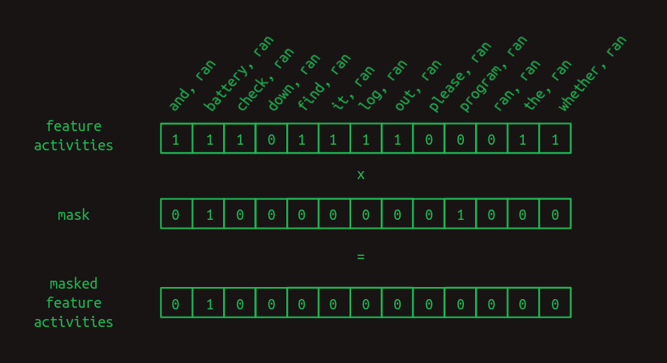
To apply the mask, we multiply the two vectors element by element. Any feature activity value in an unmasked position will be multiplied by one and left unchanged. Any feature activity value in a masked position will be multiplied by zero, and thus forced to zero.
The mask has the effect of hiding a lot of the transition matrix. It hides the combination of ran with everything except battery and program, leaving just the features that matter.
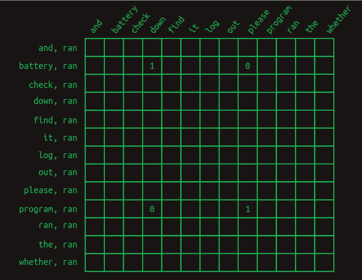
After masking the unhelpful features, the next word predictions become much stronger. When the word battery occurs earlier in the sentence, the word after ran is predicted to be down with a weight of 1 and please with a weight of 0. What was a weight difference of 25 percent has become a difference of infinity percent. There is no doubt what word comes next. The same strong prediction occurs for please when program occurs early on.
This process of selective masking is the attention called out in the title of the original paper on transformers. So far, what we've descibed is a just an approximation of how attention is implemented in the paper. It captures the important concepts, but the details are different. We'll close that gap later.
Rest Stop and an Off Ramp
Congratulations on making it this far. You can stop if you want. The selective-second-order-with-skips model is useful way to think about what transformers do, at least in the decoder side. It captures, to a first approximation, what generative language models like OpenAI's GPT-3 and GitHub's Copilot are doing. It doesn't tell the complete story, but it represents the central thrust of it.
The next sections cover more of the gap between this intuitive explanation and how transformers are implemented. These are largely driven by three practical considerations.
- Computers are especially good at matrix multiplications. There is an entire industry around building computer hardware specifically for fast matrix multiplications. Any computation that can be expressed as a matrix multiplication can be made shockingly efficient. It's a bullet train. If you can get your baggage into it, it will get you where you want to go real fast.
- Each step needs to be differentiable. So far we've just been working with toy examples, and have had the luxury of hand-picking all the transition probabilities and mask values—the model parameters. In practice, these have to be learned via backpropagation, which depends on each computation step being differentiable. This means that for any small change in a parameter, we can calculate the change in the model error or loss.
-
The gradient needs to be smooth and well
conditioned.
The combination of all the
derivatives for all the parameters is the loss
gradient.
In practice, getting backpropagation to behave well requires
gradients that are smooth, that is, the slope doesn’t change
very quickly as you make small steps in any direction.
They also behave much better when the gradient is well conditioned,
that is, it’s not radically larger in one direction than another.
If you picture a loss function as a landscape, The Grand Canyon
would be a poorly conditioned one. Depending on whether you are
traveling along the bottom, or up the side, you will have very
different slopes to travel. By contrast, the rolling hills of
the classic Windows screensaver would have a well conditioned
gradient.
If the science of architecting neural networks is creating differentiable building blocks, the art of it is stacking them in such a way that the gradient doesn’t change too quickly and is roughly of the same magnitude in every direction.
Attention as matrix multiplication
Feature weights could be straightforward to build, by counting occurrences in training, but attention masks are not. Up to this point, we've pulled the mask vector out of thin air. How transformers find the relevant mask matters. It would be natural to use some sort of lookup table, but now we are focusing hard on expressing everything as matrix multiplications. We can use the same lookup method we introduced above by stacking the mask vectors for every word into a matrix and using the one-hot representation of the most recent word to pull out the relevant mask.
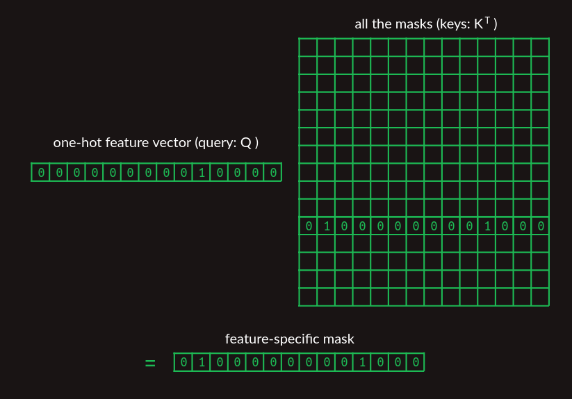
In the matrix showing the collection of mask vectors, we've only shown the one we're trying to pull out, for clarity.
We're finally getting to the point where we can start tying into the paper. This mask lookup is represented by the QK^T term in the attention equation.
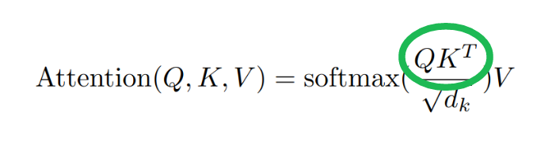
The query Q represents the feature of interest and the matrix K represents the collection of masks. Because it's stored with masks in columns, rather than rows, it needs to be transposed (with the T operator) before multiplying. By the time we're all done, we'll make some important modifications to this, but at this level it captures the concept of a differentiable lookup table that transformers make use of.
Second order sequence model as matrix multiplications
Another step that we have been hand wavy about so far is the construction of transition matrices. We have been clear about the logic, but not about how to do it with matrix multiplications.
Once we have the result of our attention step, a vector that includes the most recent word and a small collection of the words that have preceded it, we need to translate that into features, each of which is a word pair. Attention masking gets us the raw material that we need, but it doesn’t build those word pair features. To do that, we can use a single layer fully connected neural network.
To see how a neural network layer can create these pairs, we'll hand craft one. It will be artificially clean and stylized, and its weights will bear no resemblance to the weights in practice, but it will demonstrate how the neural network has the expressivity necessary to build these two word pair features. To keep it small and clean, will focus on just the three attended words from this example, battery, program, ran.
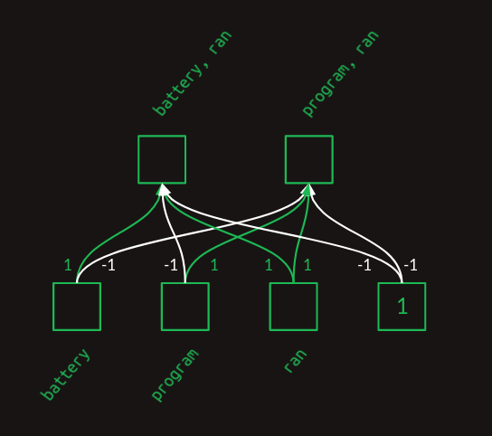
In the layer diagram above, we can see how the weights act to combine the presence and absence of each word into a collection of features. This can also be expressed in matrix form.
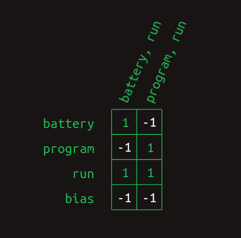
And it can be calculated by a matrix multiplication with a vector representing the collection of words seen so far.
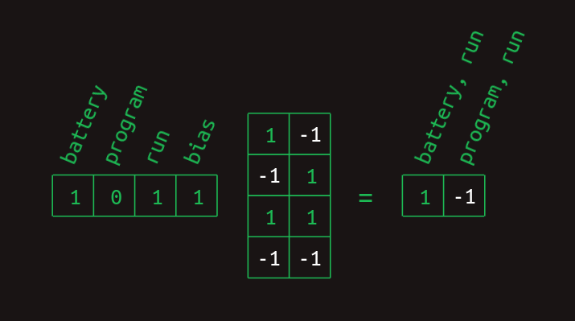
The battery and ran elements are 1 and the program element is 0. The bias element is always 1, a feature of neural networks. Working through the matrix multiplication gives a 1 for the element representing battery, ran and a -1 for the element representing program, ran. The results for the other case are similar.
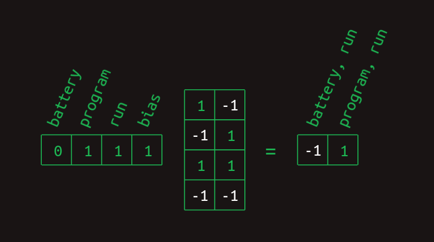
The final step in calculating these word combo features is to apply a rectified linear unit (ReLU) nonlinearity. The effect of this is to substitute any negative value with a zero. This cleans up both of these results so they represent the presence (with a 1) or absence (with a 0) of each word combination feature.
With those gymnastics behind us, we finally have a matrix multiplication based method for creating multiword features. Although I originally claimed that these consist of the most recent word and one earlier word, a closer look at this method shows that it can build other features too. When the feature creation matrix is learned, rather than hard coded, other structures can be learned. Even in this toy example, there's nothing to stop the creation of a three-word combination like battery, program, ran. If this combination occurred commonly enough it would probably end up being represented. There wouldn't be any way to indicated what order the words occurred in (at least not yet), but we could absolutely use their co-occurrence to make predictions. It would even be possible to make use of word combos that ignored the most recent word, like battery, program. These and other types of features are probably created in practice, exposing the oversimiplification I made when I claimed that transformers are a selective-second-order-with-skips sequence model. There's more nuance to it than that, and now you can see exactly what that nuance is. This won't be the last time we'll change the story to incorporate more subtlety.
In this form, the multiword feature matrix is ready for one more matrix multiplication, the second order sequence model with skips we developed above. All together, the sequence of
- feature creation matrix multiplication,
- ReLU nonlinearity, and
- transition matrix multiplication
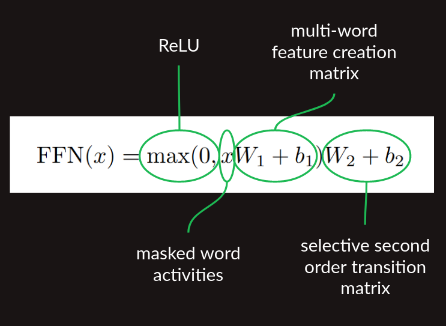
The Figure 1 architecture diagram of the of the paper shows these lumped together as the Feed Forward block.
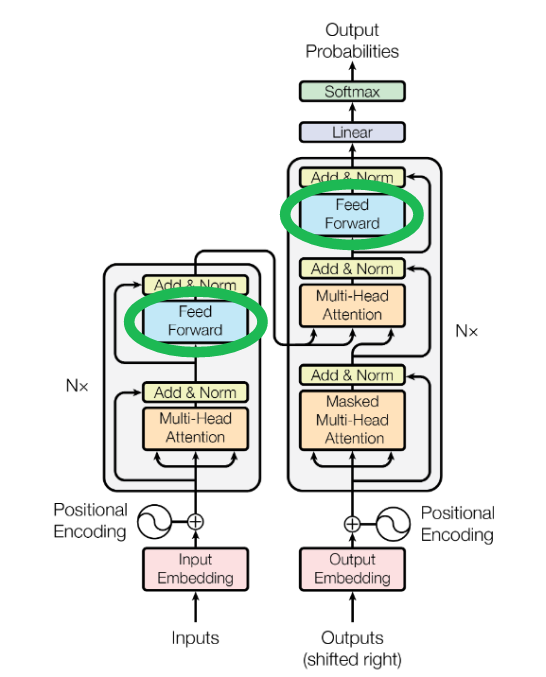
Sequence completion
So far we've only talked about next word prediction. There are a couple of pieces we need to add to get our decoder to generate a long sequence. The first is a prompt, some example text to give the transformer running start and context on which to build the rest of the sequence. It gets fed in to decoder, the column on the right in the image above, where it's labeled "Outputs (shifted right)". Choosing a prompt that gives interesting sequences is an art in itself, called prompt engineering. It's also a great example of humans modifying their behavior to support algorithms, rather than the other way around.
Once the decoder has a partial sequence to get started with, it takes a forward pass. The end result is a set of predicted probability distributions of words, one probability distribution for each position in the sequence. At each position, the distribution shows the predicted probabilities for each next word in the vocabulary. We don't care about predicted probabilities for each established word in the sequence. They're already established. What we really care about are the predicted probabilities for the next word after the end of the prompt. There are several ways to go about choosing what that word should be, but the most straightforward is called "greedy", picking the word with the highest probability.
The new next word then gets added to the sequence, substituted in at the with the "Outputs" at the bottom of the decoder, and the process is repeated until you get tired of it.
The one piece we're not quite ready to describe in detail is yet another form of masking, ensuring that when the transformer makes predictions it only looks behind, not ahead. It's applied in the block labeled "Masked Multi-Head Attention". We'll revisit this later when we can be clearer about how it's done.
Embeddings
As we’ve described them so far, transformers are too big. For a vocabulary size N of say 50,000, the transition matrix between all pairs of words and all potential next words would have 50,000 columns and 50,000 squared (2.5 billion) rows, totaling over 100 trillion elements. That is still a stretch, even for modern hardware.
It’s not just the size of the matrices that’s the problem. In order to build a stable transition language model, we would have to provide training data illustrating every potential sequence several times at least. That would far exceed the capacity of even the most ambitious training data sets.
Fortunately, there is a workaround for both of these problems, embeddings.
In a one-hot representation of a language, there is one vector element for each word. For a vocabulary of size N that vector an N-dimensional space. Each word represents a point in that space, one unit away from the origin along one of the many axes. I haven't figured out a great way to draw a high dimensional space, but there's a crude representation of it below.
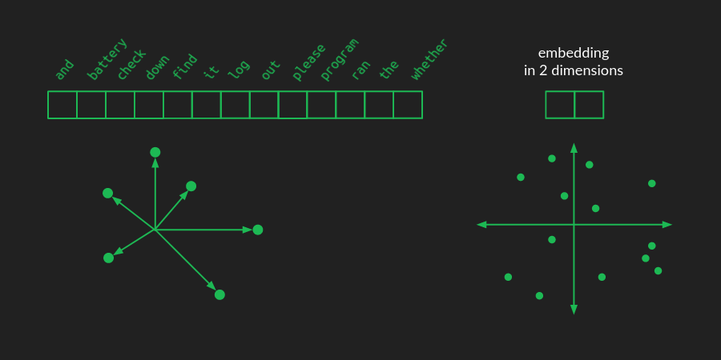
In an embedding, those word points are all taken and rearranged (projected, in linear algebra terminology) into a lower-dimensional space. The picture above shows what they might look like in a 2-dimensional space for example. Now, instead of needing N numbers to specify a word, we only need 2. These are the (x, y) coordinates of each point in the new space. Here's what a 2-dimensional embedding might look like for our toy example, together with the coordinates of a few of the words.
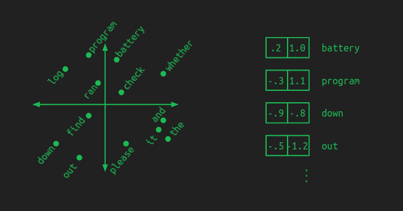
A good embedding groups words with similar meanings together. A model that works with an embedding learns patterns in the embedded space. That means that whatever it learns to do with one word automatically gets applied to all the words right next to it. This has the added benefit of reducing the amount of training data needed. Each example gives a little bit of learning that gets applied across a whole neighborhood of words.
An embedding reduces the number of parameters needed by a tremendous amount. However, the fewer the dimensions in the embedded space, the more information about the original words gets discarded. The richness of a language still requires quite a bit of space to lay out all the important concepts so that they don't step on each other's toes. By choosing the size of the embedded space, we get to trade off computational load for model accuracy.
It will probably not surprise you to learn that projecting words from their one-hot representation to an embedded space involves a matrix multiplication. Projection is what matrices do best. Starting with a one-hot matrix that has one row and N columns, and moving to an embedded space of two dimensions, the projection matrix will have N rows and two columns, as shown here.
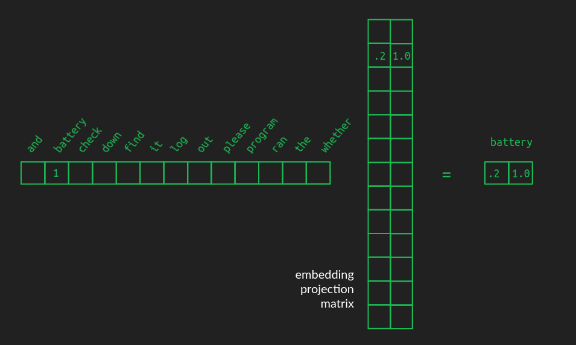
This example shows how a one-hot vector, representing for example battery, pulls out the row associated with it, which contains the coordinates of the word in the embedded space. Projection matrices can convert the original collection of one-hot vocabulary vectors into any configuration in a space of whatever dimensionality you want. The biggest trick is finding a useful projection, one that has similar words grouped together, and one that has enough dimensions to spread them out. There are some decent pre-computed embeddings for common langauges, like English. Also, like everything else in the transformer, it can be learned during training.
Positional embeddings
De-embeddings
Skip connection
Layer normalization
Softmax
Multi-head attention
Multiple layers
Decoder stack
Encoder stack
Cross-attention
Tokenizing
Byte pair encoding
>Audio speech
Resources and credits
- ► The O.G. paper, Attention is All You Need.
- ► A wildly helpful Python implementation of the transformer.
- ► Jay Alammar's insightful transformer walkthough.
- ► Lukasz Kaiser's (one of the authors) talk explaining how transformers work.
- ► The illustrations in Google Slides.